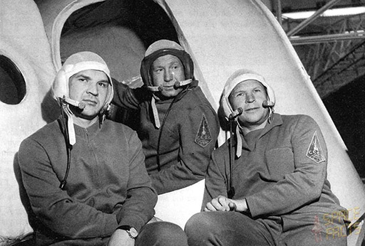

Ракета-носитель «Союз-ФГ» — ракета среднего класса, разработана и производится в РКЦ «Прогресс» (г. Самара). Она предназначена для выведения на околоземную орбиту автоматических космических аппаратов социально-экономического, научно-исследовательского и специального назначения, а также пилотируемых кораблей серии «Союз»
История «Союза» началась давно, не 50 лет назад, а несколько раньше. Начало было положено постановлением ЦК КПСС и Совета Министров СССР, где говорилось о необходимости разработки межконтинентальной баллистической ракеты, способной нести термоядерный заряд на расстояние в 10 тысяч километров. Спустя несколько лет задача была выполнена, и ракета поступила на вооружение в специально созданные ракетные войска. А в 1959 году состоялся первый пуск двухступенчатой ракеты типа МБР Р-7А. Уже после того, как Юрий Гагарин слетал в космос, в СССР начали реализовать программу более длительных полетов. Проблема была в том, что ракета «Восход» не подходила для работы в подобном проекте. Эта ракета была также лишена системы аварийного спасения экипажа, которая могла бы выполнить спасительные для команды действия (отстрел отсека) в случае возникновения экстренной ситуации, угрожающей не только жизни пилотов, но и персонала на земле.
Общая длина ракеты-носителя составляет не более чем 50,67 м и зависит от типа запускаемого космического корабля. Максимальный поперечный размер ракеты-носителя измеряется по концевикам воздушных рулей и составляет 10 м и 30 см. Стартовая масса не более 308 тонн, а общая масса топлива не более чем 274 тонны. Сухая масса ракеты-носителя с транспортными патронами и полезной нагрузкой не более чем 34 тонны и зависит от типа запускаемого космического корабля.
Двигательные установки РН «Союз» позволяют развивать суммарную тягу 413 тс на уровне моря и более чем 505 тс в вакууме.
Трёхступенчатая ракета-носитель «Союз» состоит из:
• первой ступени, которая состоит из четырёх стартовых ускорителей — блоков «Б», «В», «Г» и «Д»;
• второй ступени, которая состоит из центрального блока «А»;
• третьей ступени — блок «И»;
• адаптера полезного груза, головного обтекателя и системы аварийного спасения экипажа.
Ракета-носитель 11А511 «Союз» позволяет выводить на низкую околоземную орбиту полезные нагрузки массой до 7,1 тонн.
В качестве двигательных установок ракеты-носителя «Союз» были использованы доработанные двигатели двухступенчатой МБР Р-7А и трёхступенчатой ракеты-носителя среднего класса «Восход».
Всего было произведено 32 запуска РН «Союз» (один пуск аварийный и одна авария ракеты на стартовой позиции до пуска). Первый пуск РН 11А511 «Союз» состоялся 28 ноября 1966 года. На орбиту был выведен беспилотный «Союз» («Космос-133»). Последний пуск состоялся 14 октября 1976 года, на орбиту был выведен транспортный корабль 7К-Т («Союз-23»).
После удачного запуска РН «Союз» 28 ноября 1966 года с аппаратом «Союз 7К-ОК» серии № 2 следующий испытательный запуск был намечен на 14 декабря 1966 года. В качестве полезной нагрузки было решено использовать «Союз 7К-ОК» серии № 1. Поскольку данный аппарат не имел пары, проверить режим автоматической стыковки было невозможно, зато можно было проверить работу бортовых систем корабля. При подготовке пуска на одном из боковых блоков не сработал пирозапал. Автоматика дала «отбой» и ракета осталась на старте. Начались работы по сливу топлива, персонал покинул бункер и находился у подножия ракеты. Через 27 минут после отмены пуска внезапно сработала система аварийного спасения корабля. Как выяснилось эта система оставалась включенной и продолжала следить за состоянием и положением корабля. Через некоторое время гироскопические датчики зафиксировали угловое отклонение космического корабля, появившееся из-за вращения Земли, и выдали аварийный сигнал. Спускаемый аппарат и бытовой отсек с помощью твердотопливных двигателей были подняты на высоту около километра где произошло отделение спускаемого аппарата и он спустился на парашюте. В приборно-агрегатном отсеке, оставшемся на ракете-носителе, загорелся теплоноситель, выливавшийся из трубопроводов, на которых отсутствовали обратные клапаны. Через двадцать семь минут после отделения системы аварийного спасения один за другим последовали несколько взрывов, но этого времени оказалось достаточно, чтобы большинство людей успели покинуть опасную зону. Майор Коростылёв из испытательного управления решил не бежать, а спрятаться за стену ограждения и погиб, задохнувшись в дыму. На следующий день после пожара умерли ещё два солдата. После катастрофы было решено совершить дополнительные испытательные запуски, а пилотируемые полёты временно приостановить. Для нового пуска начали готовить «Союз 7К-ОК» № 3, старт которого назначили на 15 января 1967 года. Запуск пилотируемых «Союзов» № 4 и № 5 наметили на март 1967 года. Старт корабля «7К-ОК» № 3 («Космос-140») с манекеном на борту состоялся 7 февраля 1967 года. Пуск был удачным, хотя из-за отказов в системе ориентации корабль израсходовал слишком много топлива, не смог выполнить все поставленные задачи и вынужден был совершить посадку в незапланированном районе — в Аральском море, где, впоследствии и затонул.
5 апреля 1975 года, 11:04 утра, космодром Байконур, стартовый комплекс № 1. Пуск ракеты-носителя «Союз 11А511», которая должна была вывести на околоземную орбиту космический корабль «Союз-18А».
На борту космического корабля находился экипаж в составе:
Василий Григорьевич Лазарев, командир корабля (2-й полёт в космос);
Олег Григорьевич Макаров, бортинженер (2-й полёт в космос).
При выведении корабля на орбиту, в работе бортовых систем третьей ступени ракеты-носителя произошёл сбой и автоматика приняла решение на аварийное отделение корабля от носителя. Разделение произошло на высоте около 150 километров над поверхностью Земли.
Спуск космического корабля на Землю произошёл по баллистической траектории с большими перегрузками, достигавшими 15g. Спускаемый аппарат корабля совершил посадку юго-западнее города Горно-Алтайск на склоне горы. После касания земной поверхности спускаемый аппарат покатился вниз по склону и остановился только зацепившись за росшее на краю пропасти дерево. Космонавты спаслись потому, что не произвели отстрел парашюта. Из спускаемого аппарата они были эвакуированы с помощью вертолёта.
Продолжительность полёта космонавтов составила 21 минуту 27 секунд.
Самым существенным отличием РН «Союз» от предыдущих носителей типа Р-7, предназначенных для пилотируемых полётов, стала разработанная ОКБ-1 система аварийного спасения (САС) нового типа. САС «взводится» за 15 минут до старта ракеты-носителя и обеспечивает спасение экипажа в случае аварии ракеты как на стартовой площадке, так и на любом участке полёта.